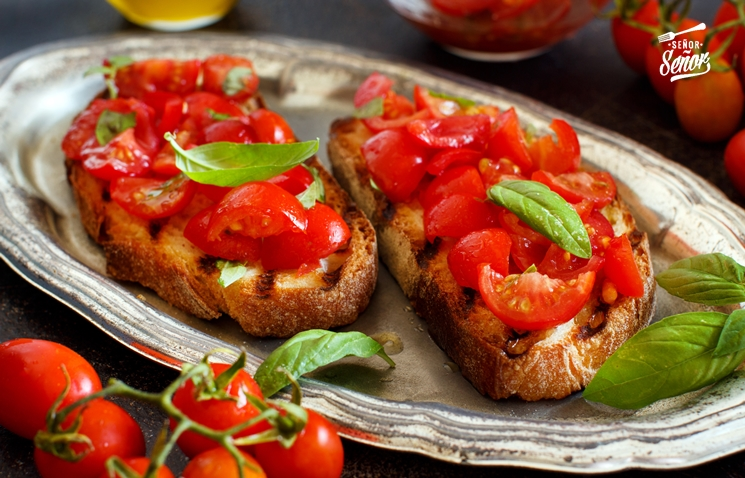

Bruschetta
La bruschetta es un aperitivo tradicional italiano que tiene sus raíces en la cocina campesina central de Italia, especialmente en regiones como Toscana y Lazio. Su origen se remonta a la antigüedad, cuando los agricultores aprovechaban el pan duro tostándolo y frotándolo con ajo, luego añadiendo aceite de oliva para darle sabor y humedad. Esta práctica sencilla permitía reutilizar el pan viejo y disfrutar de un bocado sabroso y nutritivo. Aunque sigue siendo un plato sencillo, la bruschetta se ha convertido en un símbolo de la cocina italiana, destacando por su sabor fresco, su textura crujiente y su capacidad de resaltar la calidad de ingredientes simples pero auténticos.
Ingredientes
- dos rodajas pan lactal integral
- 3 tomates peritas
- aceite
- ajo
- sal
- pimienta a gusto
- queso blanco untable
Paso a paso
- Cortar las puntas de los tomates y descartar, Cortalos en rodajas, ponerlos en una fuente para horno aceitada con un par de ajos picados. Los llevas al horno por unos 10 minutos, Retiras y reservas
- Al pan (yo usé uno con semillas) frotarlos con ajo y tostarlos no mucho tiempo de ambos lados.
- Cuando ya tenés el pan listo, le colocas arriba unos tomates (si van con el ajo mejor) podes salpimentar, agregas una cucharada de queso y lista para servir.